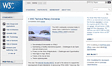

 문 대통령은 첫 한미정상회담을 위해 이날 오후 워싱턴D.C.에 도착해 첫 공식
문 대통령은 첫 한미정상회담을 위해 이날 오후 워싱턴D.C.에 도착해 첫 공식 일정으로 버지니아주 콴티코의 국립 해병대 박물관에 있는 '장진호 전투 기념비'를 찾아 헌화한 뒤 기념사에서 "한미동맹은 전쟁의 포화 속에서 피로 맺어졌다. 몇 장의 종이 위에 서명으로 맺어진 약속이 아니다"라며 이같이 밝혔다.